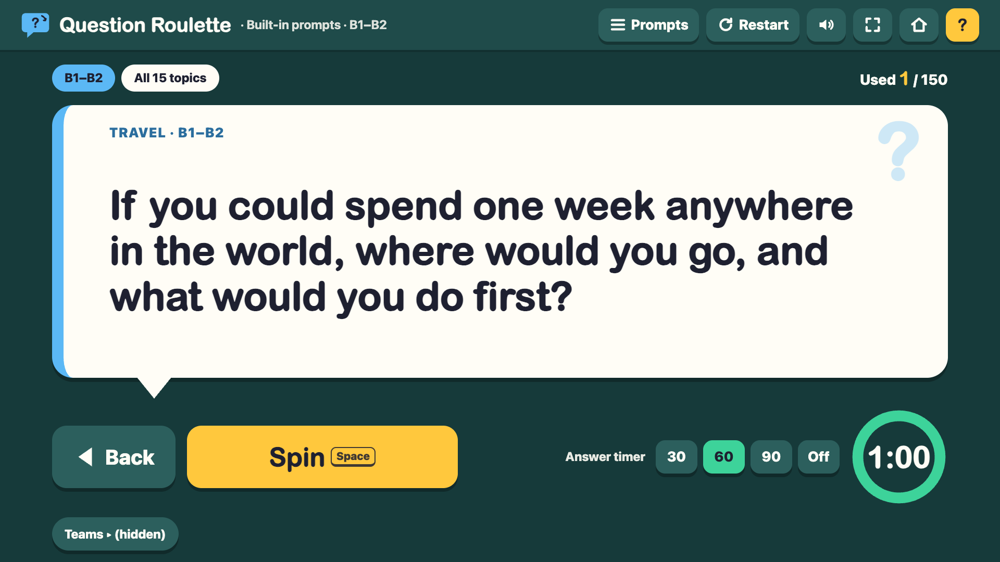
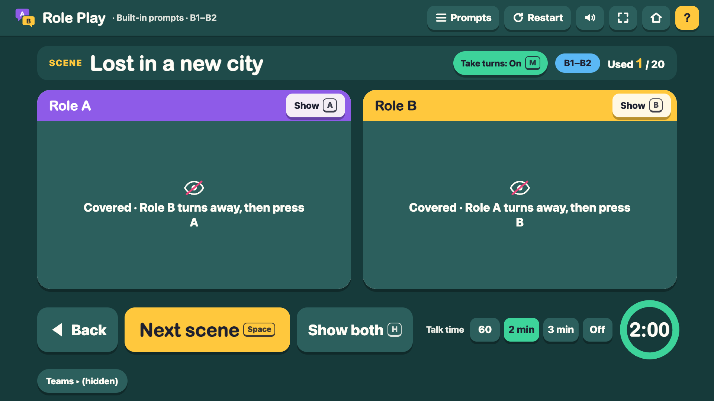
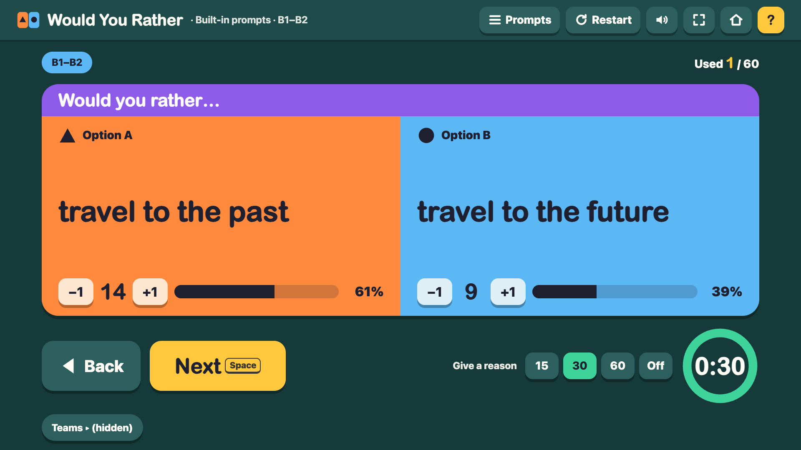
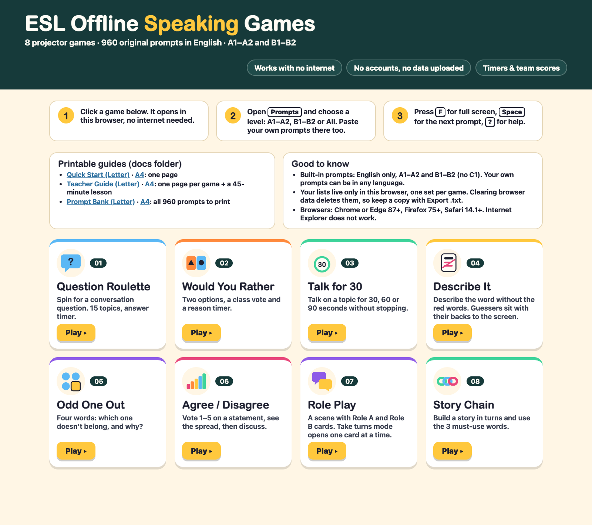

ESL Offline Speaking Games Pack
8 projector speaking games with 960 original English prompts (A1–A2 and B1–B2). Double-click and play: no internet, no accounts, $15 one-time.

What you get
- 8 no-prep ESL speaking games, each one single HTML file: Question Roulette, Would You Rather, Talk for 30, Describe It, Odd One Out, Agree / Disagree, Role Play and Story Chain.
- 960 original English prompts, half A1–A2 and half B1–B2: 300 conversation questions in 15 topics, 120 would you rather questions, 120 talk topics, 150 describe-it word cards, 60 odd-one-out sets (30 per level), 80 opinion statements, 40 role-play scenes (20 per level), 50 story openings + 40 must-use word sets.
- Works with no internet: unzip, double-click START-HERE.html and project. No account, no install, no data uploaded, no cookies.
- Timers with a sound and a flashing border, 2–6 team scoreboards, keyboard shortcuts (Space, T, F, Esc).
- Paste your own prompts in any language, import or export .txt, and save up to 20 lists per game.
One ZIP, 16 files: START-HERE.html, 8 game files, 6 PDFs (Quick Start 1 page, Teacher Guide 11 pages and Prompt Bank 22 pages Letter / 20 pages A4, each in US Letter and A4) and LICENSE.txt.
Levels A1–B2 only: no C1 and no business-English prompts. Built-in prompts are English only. Role Play has 20 scenes and Odd One Out 30 sets per level; add your own lines for daily use.
Real screens




Browsers
Chrome or Edge 87+, Firefox 75+, Safari 14.1+ on Windows or Mac. Not Internet Explorer.
14-day no-questions refund and support: chenphien@gmail.com. Secure checkout by Waffo Pancake, our merchant of record.